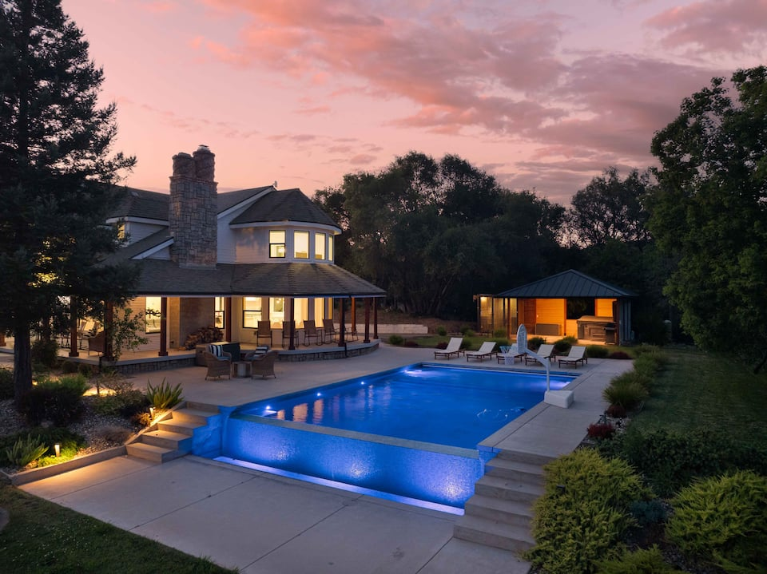
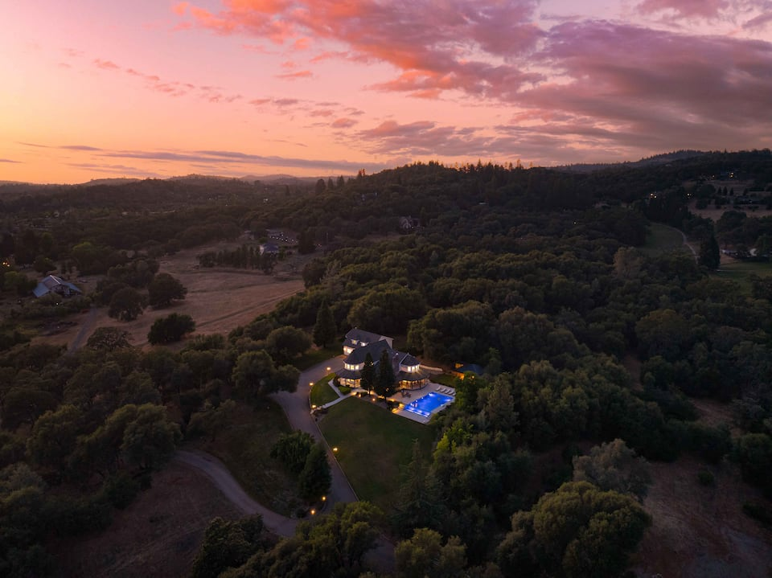
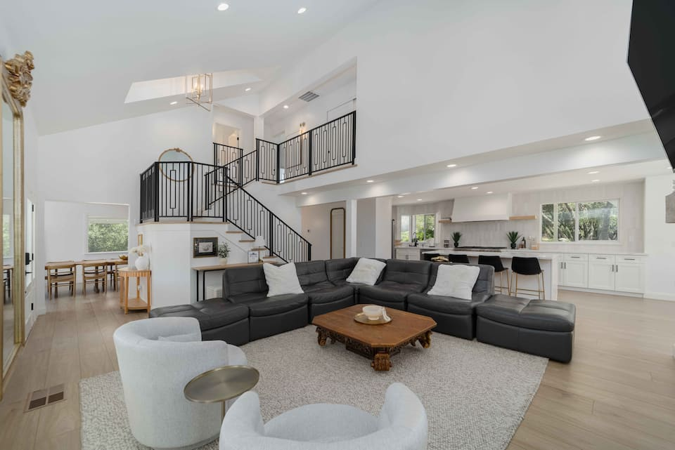
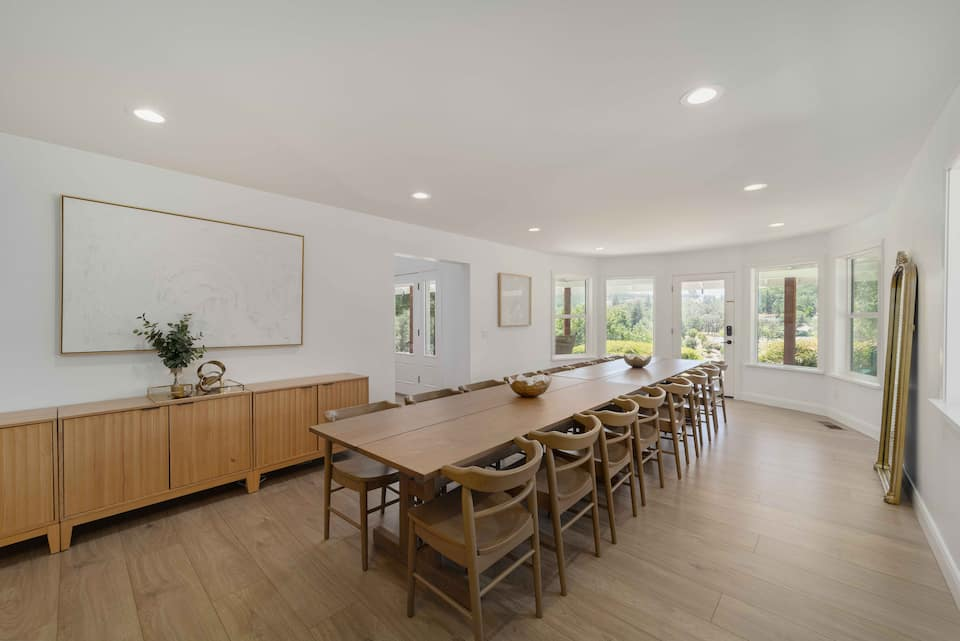
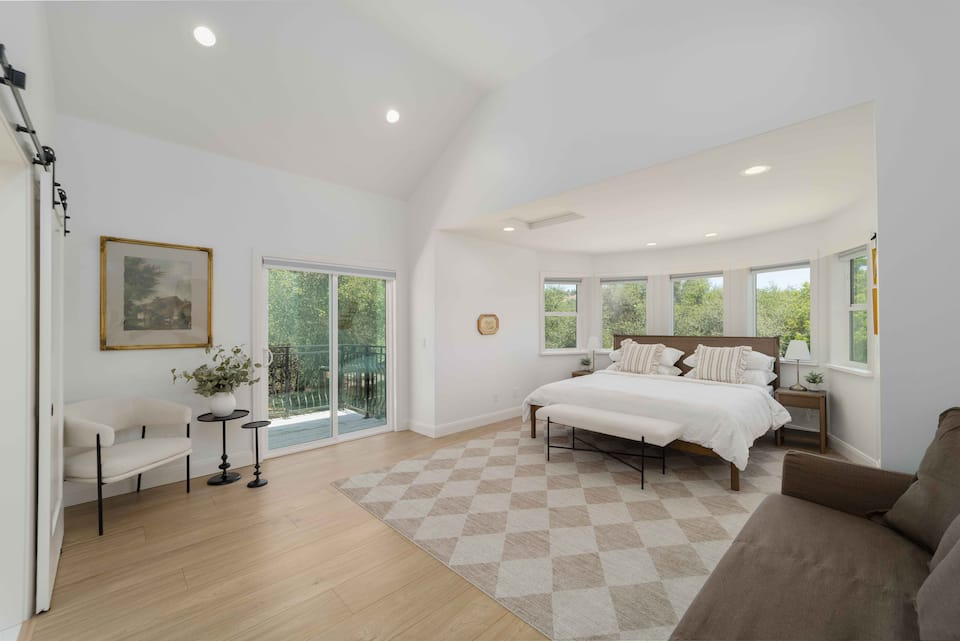

Auburn foothills home
A polished home base in the Auburn and Granite Bay area, with room to spend more of the weekend together at the house. This leans toward shared meals, games, lake time nearby, and relaxed group hangouts.
Address: 13559 Dry Creek Road, Auburn, CA 95602